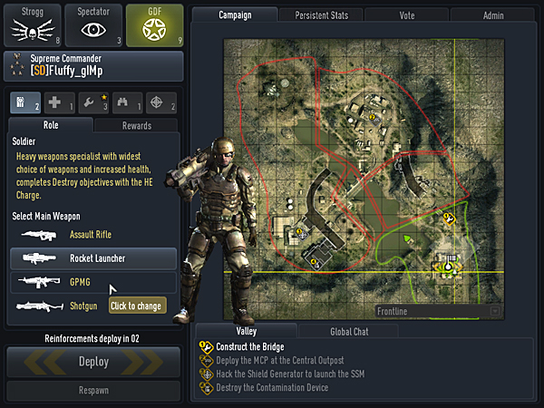
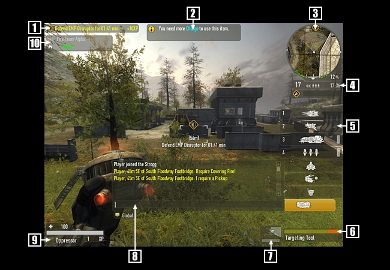

LIMBO MENU
When you first join a game, you will be presented with the Limbo Menu. You can also access this menu at any time by hitting the Limbo Menu key (Default L).
CHOOSE YOUR SIDE
The left side allows you to choose your team, as well as your class. Click the appropriate team icon in the upper-left corner, and then click the class icon under that. Once you have made your selection, click DEPLOY at the bottom left to get into the game. The Reinforcements Timer above the Deploy button tells you when the next wave spawns in the game.
If at any time you want to change your class or team, the RESPAWN button allows you to respawn with the next wave or reinforcements at the spawn point of your choice.
KNOW YOUR ROLE
The Limbo Map on the right side of the Limbo Menu tells you key factors of the current game:
- Spawn points are represented by green flags. You will automatically change spawn points when objectives are completed.
- Objectives are numbered and represented by icons indicating the action required. For a complete list of maps and their objectives, see MAPS.
- Friendly vehicles are shown with green icons for each vehicle.
PERSISTENT STATS
Clicking the PERSISTENT STATS tab shows the accumulative stats of the currently logged in player. Here you can view detailed stats on your performance with weapons, teams, vehicles, and more.
NOTE: You must be logged in to see your stats, and if you are mid campaign or playing a map, you may have to hit the “refresh stats” button to see the most up to date persistent player statistics.
YOUR VOTE COUNTS
Clicking the VOTE tab allows you to choose from a wide variety of votes to call while in the game. Once you have called a vote you cannot call another vote for a brief period of time.
ADMIN CONTROL
Clicking the ADMIN tab on the top right corner of the Limbo Menu allows server administrators to login and change server settings for the game as well as specific players.
In Game Display
H.U.D.
 Your HUD (Heads Up Display) shows all relevant in-game information:
- Objective & Missions - Current mission and XP value. Press the M key to toggle through available personal missions.
- Critical Information - Hints and important information
- Command Map - Top-down view of battlefield. Press the N key to expand.
- Mission Status - Includes current objective number, status and mission time remaining.
- Weapon/Tool Selection - Use the Mouse Wheel to change Weapon/Tool or select the corresponding number key for quick select
- Weapon Status - Selected weapon and ammo
- Deployable Status - Type, health and fire status of a deployable you have on the battlefield
- Chat Window - Appears when you press either the Chat (T) or Team Chat (Y) key
- Player Status - Health, rank and experience points (XP) earned.
- Fire Team List - Status of Fire Team members